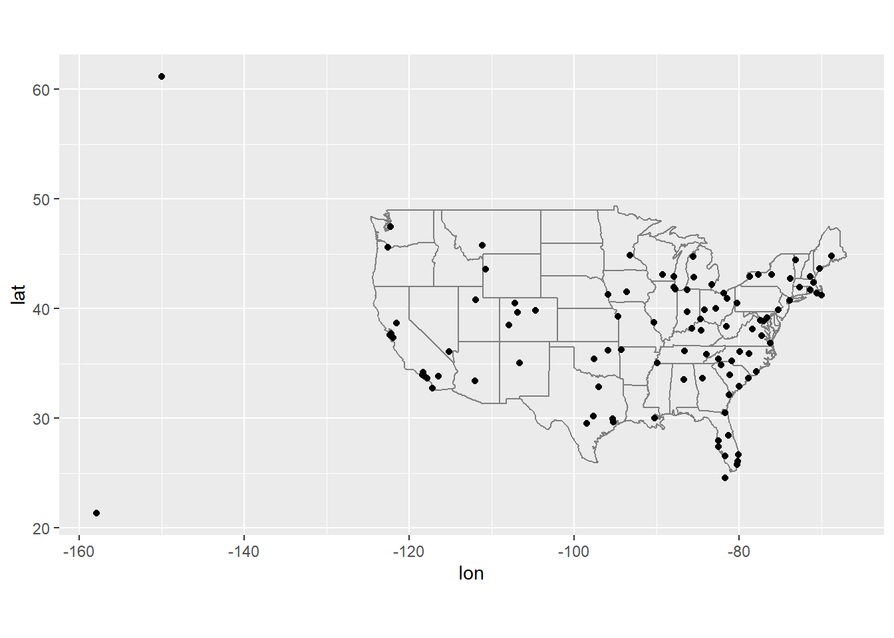
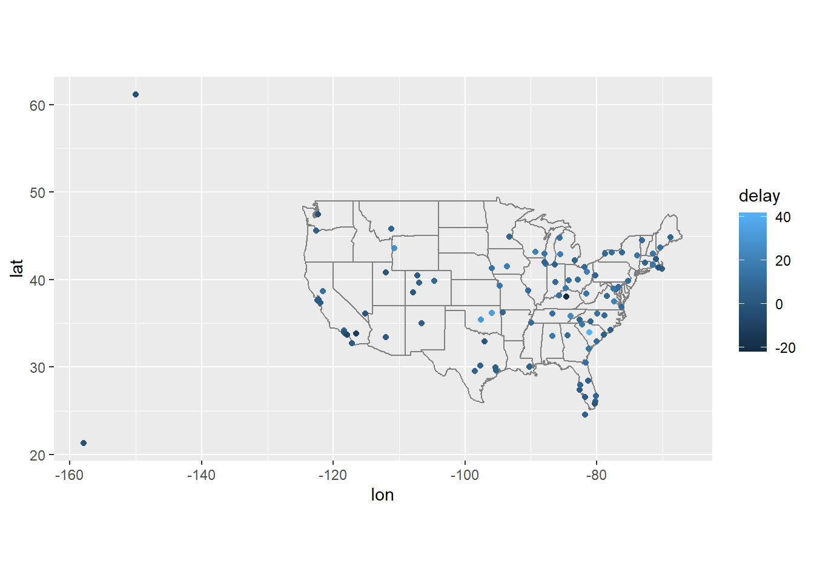
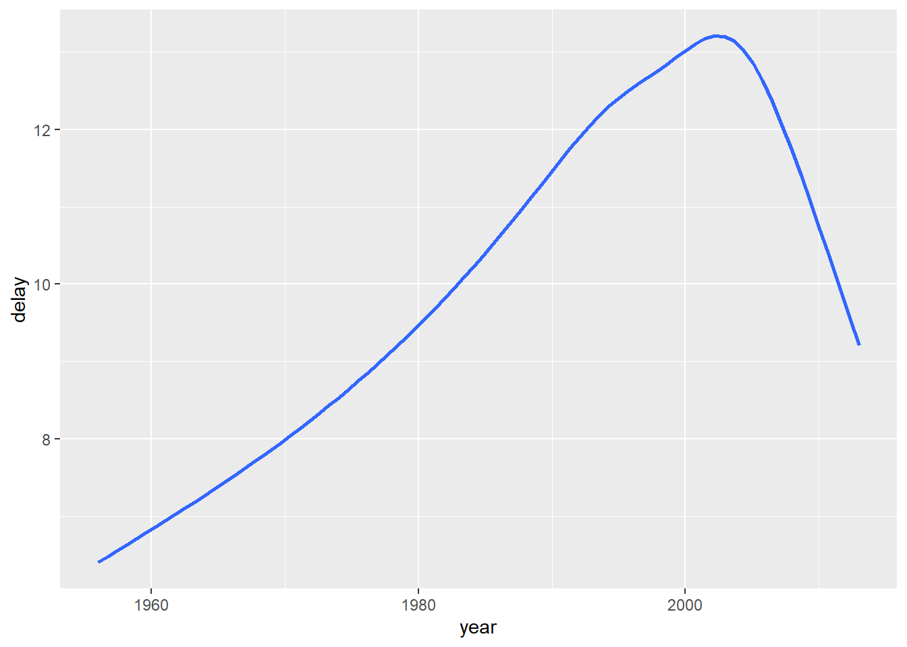
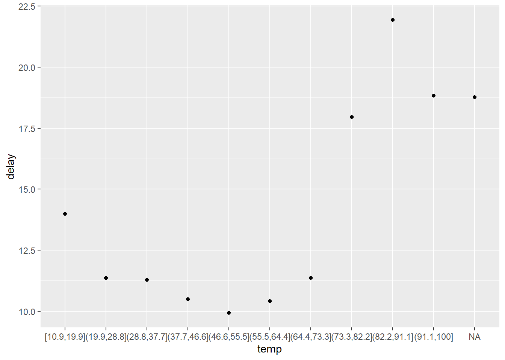
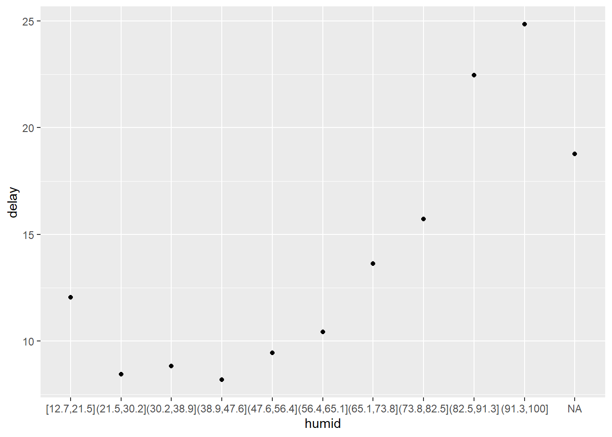
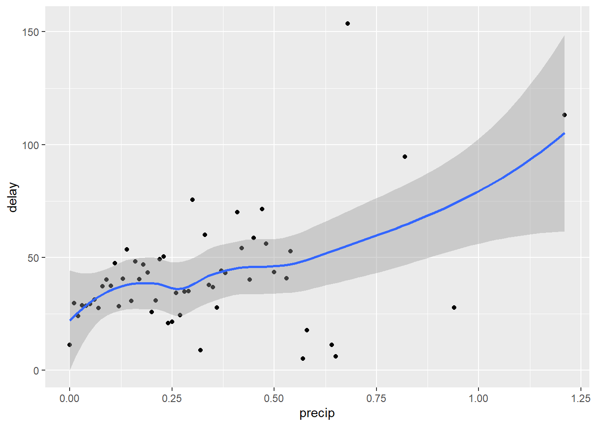
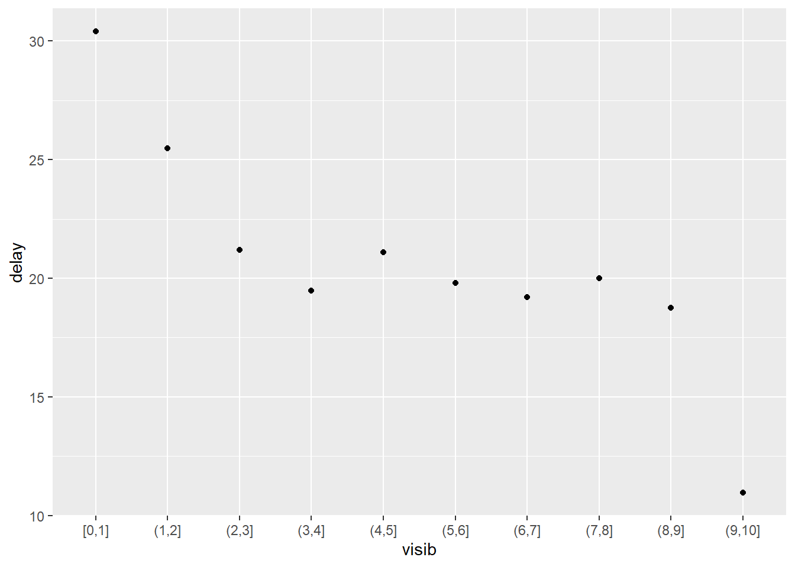
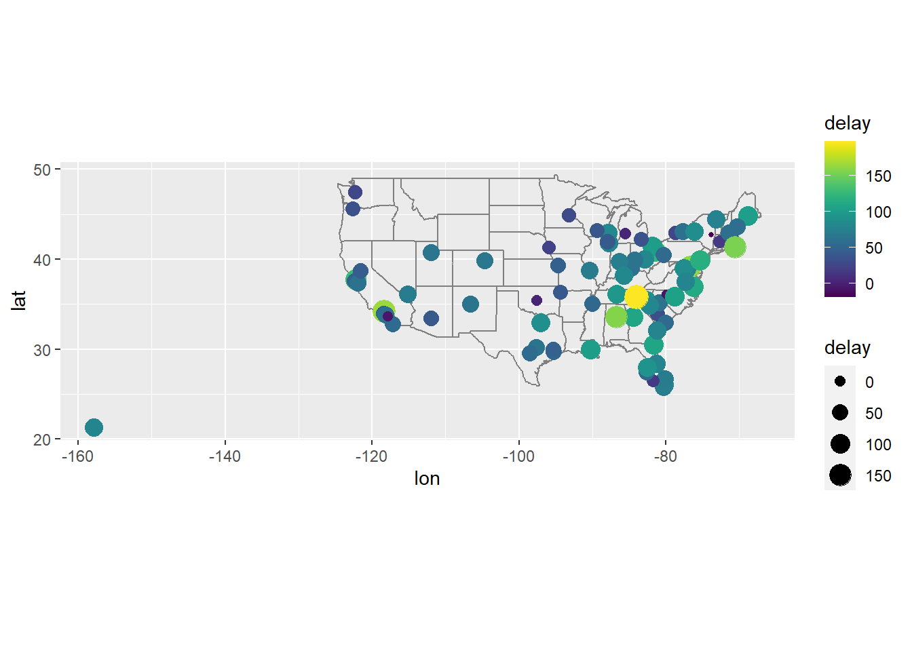
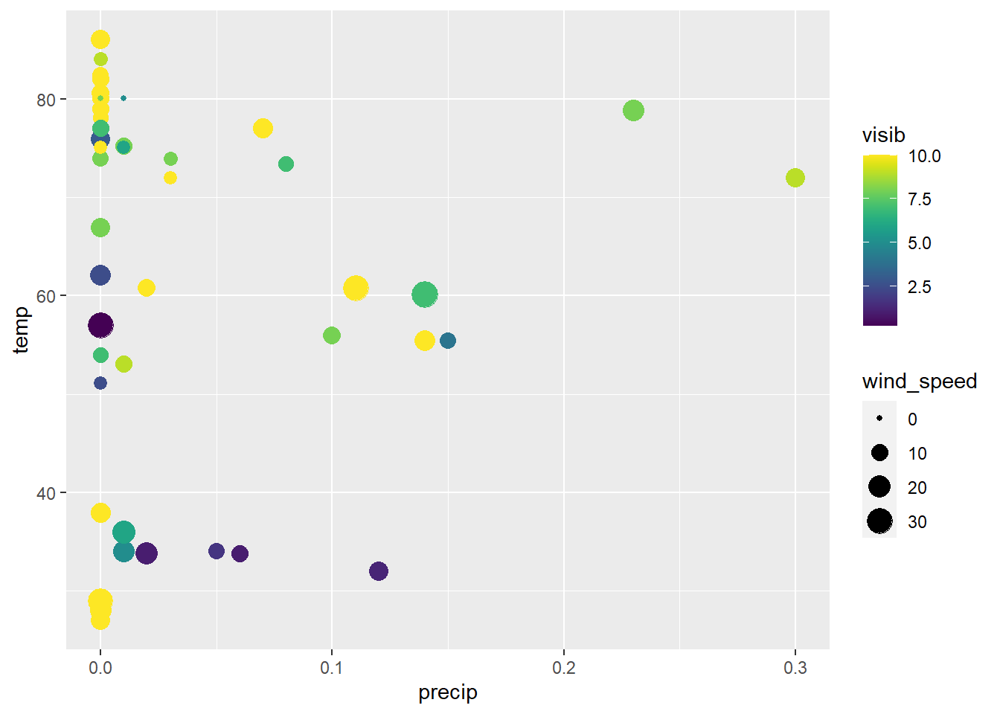

Capítulo 10 Dados relacionais com dplyr
10.2 nycflights13
Exercício 10.2.1
Imagine que você quisesse desenhar (aproximadamente) a rota que cada avião fez da sua origem ao seu destino. De quais variáveis você precisaria? Quais tabels você precisaria combinar?
Solução. x
Exercício 10.2.2
Eu esqueci de desenhar o relacionamento entre weather e airports. Qual é o relacionamento e como ele deveria aparecer no diagrama?
Solução. Utilizaríamos as tabelas weather e airports por meio da variável origin de weather.
Exercício 10.2.3
weather só contém informações dos aeroportos de origem (NYC). Se contivesse registro de clima de todos os aeroportos dos Estados Unidos, qual relação adicional definiria com flights?
Solução. Haveria uma nova relação entre esses dois conjuntos de dados, utilizando além da data e hora de chegada, a variável dest.
Exercício 10.2.4
Nós sabemos que alguns dias do ano são “especiais”, e menos pessoas que o normal viajam nesse período. Como você poderia representar esses dados como um data frame? Quais seriam as chaves primárias dessa tabela? Como ela se conectaria às tabelas existentes?
Solução. Haveria um novo conjunto de dados chamado, digamos, special_dates, e a chave seria formada pelas variáveis year, month e day
10.3 Chaves (keys)
Exercício 10.3.1
Adicione uma surrogate key para flights.
Solução.
## # A tibble: 336,776 × 20
## year month day dep_time
## <int> <int> <int> <int>
## 1 2013 1 1 517
## 2 2013 1 1 533
## 3 2013 1 1 542
## 4 2013 1 1 544
## 5 2013 1 1 554
## 6 2013 1 1 554
## 7 2013 1 1 555
## 8 2013 1 1 557
## 9 2013 1 1 557
## 10 2013 1 1 558
## # ℹ 336,766 more rows
## # ℹ 16 more variables:
## # sched_dep_time <int>,
## # dep_delay <dbl>,
## # arr_time <int>,
## # sched_arr_time <int>, …Exercício 10.3.2
Identifique as keys nos seguintes conjuntos de dados:
Lahman::Battingbabynames::babynamesnasaweather::atmosfueleconomy::vehiclesggplot2::diamonds
(Você precisará instalar alguns pacotes e ler algumas documentações.)
Solução. x
Exercício 10.3.3
Desenhe um diagrama ilustrando as conexões entre as tabelas Batting, Master e Salaries no pacote Lahman. Desenhe outro diagrama que mostre o relacionamento entre Master, Managers e AwardsManagers.
Como você caracteriza o relacionamento entre as tabelas Batting, Pitching e Fielding?
Solução. x
10.4 Mutating joins
Exercício 10.4.1
Calcule o atraso médio por destino, depois faça join no data frame airports para que possa exibir a distribuição espacial dos atrasos. Eis uma maneira fácil de desenhar um mapa dos Estados Unidos:
airports %>%
semi_join(flights, c("faa" = "dest")) %>%
ggplot(aes(lon, lat)) +
borders("state") +
geom_point() +
coord_quickmap()
(Não se preocupe se você não entender o que semi_join() faz - você aprenderá isso em seguida.)
Você pode querer usar size ou color dos pontos para exibir o atraso médio de casa aeroporto.
Solução.
flights %>%
group_by(dest) %>%
summarise(
delay = mean(arr_delay, na.rm = TRUE)
) %>%
left_join(airports, by = c("dest" = "faa")) %>%
select (name, delay, lat, lon) %>%
ggplot(aes(
x = lon,
y = lat,
color = delay
)) +
borders("state") +
geom_point() +
coord_quickmap()## Warning: Removed 4 rows containing missing values (`geom_point()`).
Exercício 10.4.2
Adicione a localização da origem e destino (isto é, lat e lon) para flights.
Solução.
flights %>%
group_by(dest, origin) %>%
summarize(
delay = mean(arr_delay, na.rm = TRUE)
) %>%
ungroup() %>%
left_join(airports, by = c("dest" = "faa")) %>%
left_join(airports, by = c("origin" = "faa"))## `summarise()` has grouped output by 'dest'. You can override using the
## `.groups` argument.## # A tibble: 224 × 17
## dest origin delay name.x
## <chr> <chr> <dbl> <chr>
## 1 ABQ JFK 4.38 Albuqu…
## 2 ACK JFK 4.85 Nantuc…
## 3 ALB EWR 14.4 Albany…
## 4 ANC EWR -2.5 Ted St…
## 5 ATL EWR 13.2 Hartsf…
## 6 ATL JFK 6.27 Hartsf…
## 7 ATL LGA 11.3 Hartsf…
## 8 AUS EWR -0.474 Austin…
## 9 AUS JFK 10.3 Austin…
## 10 AVL EWR 8.80 Ashevi…
## # ℹ 214 more rows
## # ℹ 13 more variables:
## # lat.x <dbl>, lon.x <dbl>,
## # alt.x <dbl>, tz.x <dbl>,
## # …Exercício 10.4.3
Há um relacionamento entre a idade de um avisão e seus atrasos?
Solução. Para responder essa questão, precisaremos:
- calular o atraso médio de um avião;
- juntar os dados do avião; e
- plotar o gráfico de dispersão correspondente.
flights %>%
group_by(tailnum) %>%
summarise(
delay = mean(arr_delay, na.rm = TRUE)
) %>%
filter(delay > 0) %>%
left_join(
planes %>%
select(tailnum, year),
by = "tailnum"
) %>%
ggplot(aes(year, delay)) +
geom_smooth(se = FALSE)## `geom_smooth()` using method = 'gam' and formula = 'y ~ s(x, bs = "cs")'## Warning: Removed 519 rows containing non-finite values (`stat_smooth()`).
Não há relação (melhorar resposta!)
Exercício 10.4.4
Quais condições climáticas tornam mais provável haver um atraso?
Solução. Vamos iniciar a nossa análise juntando os conjuntos de dados:
(flights_weather <- flights %>%
inner_join(
weather,
by = c(
"origin" = "origin",
"year" = "year",
"month" = "month",
"day" = "day",
"hour" = "hour"
)
))## # A tibble: 335,220 × 29
## year month day dep_time
## <int> <int> <int> <int>
## 1 2013 1 1 517
## 2 2013 1 1 533
## 3 2013 1 1 542
## 4 2013 1 1 544
## 5 2013 1 1 554
## 6 2013 1 1 554
## 7 2013 1 1 555
## 8 2013 1 1 557
## 9 2013 1 1 557
## 10 2013 1 1 558
## # ℹ 335,210 more rows
## # ℹ 25 more variables:
## # sched_dep_time <int>,
## # dep_delay <dbl>,
## # arr_time <int>,
## # sched_arr_time <int>, …Agora vamos avaliar cada uma das condições climáticas antes em relação ao atraso médio na decolagem.
Para a temperatura do ar, não encontramos uma relação, conforme exemplo abaixo.
flights_weather %>%
mutate(temp = cut_interval(temp, n = 10)) %>%
group_by(temp) %>%
summarise(delay = mean(dep_delay, na.rm = TRUE)) %>%
ggplot(aes(temp, delay)) +
geom_point()
Para a umidade do ar, parece haver uma pequena relação, porém esta pode estar associada a outras variáveis (precip e visib, mais especificamente).
flights_weather %>%
mutate(humid = cut_interval(humid, n = 10)) %>%
group_by(humid) %>%
summarise(delay = mean(dep_delay, na.rm = TRUE)) %>%
ggplot(aes(humid, delay)) +
geom_point() Para a quantidade de chuva, parece haver uma associação muito fraca.
flights_weather %>%
group_by(precip) %>%
summarise(delay = mean(dep_delay, na.rm = TRUE)) %>%
ggplot(aes(precip, delay)) +
geom_point() +
geom_smooth()## `geom_smooth()` using method = 'loess' and formula = 'y ~ x'
Para a visibilidade, já podemos perceber uma relação negativa forte.
flights_weather %>%
mutate(visib = cut_interval(visib, n = 10)) %>%
group_by(visib) %>%
summarise(delay = mean(dep_delay, na.rm = TRUE)) %>%
ggplot(aes(visib, delay)) +
geom_point() +
geom_smooth()## `geom_smooth()` using method = 'loess' and formula = 'y ~ x'
Exercício 10.4.5
O que aconteceu no dia 13 de junho de 2013? Exiba o padrão espacial de atrasos e, então, uso o Google para fazer uma referência cruzada com o clima.
Solução. Houve grande número de atrasos nos voos para a região sudeste dos Estados Unidos. O fato está diretamente associado a fortes tempestades que ocorreram na região entre os dias 12 e 13 de junho de 2013.
flights %>%
filter(year == 2013, month == 6, day == 13) %>%
group_by(dest) %>%
summarise(
delay = mean(arr_delay, na.rm = TRUE)
) %>%
inner_join(airports, by = c("dest" = "faa")) %>%
select (name, delay, lat, lon) %>%
ggplot(aes(
x = lon,
y = lat,
color = delay,
size = delay
)) +
borders("state") +
geom_point() +
coord_quickmap() +
scale_colour_viridis()## Warning: Removed 3 rows containing missing values (`geom_point()`).
10.5 Filtering joins
Exercício 10.5.1
O que significa para um voo ter um tailnum faltante? O que os números de cauda que não têm um registro correspondente em planes têm em comum? (Dica: uma variável explica aproximadamente 90% dos problemas.)
Solução. Primeiro vamos avaliar o caso de tailnum faltante no conjunto flights:
## # A tibble: 2,512 × 19
## year month day dep_time
## <int> <int> <int> <int>
## 1 2013 1 2 NA
## 2 2013 1 2 NA
## 3 2013 1 3 NA
## 4 2013 1 3 NA
## 5 2013 1 4 NA
## 6 2013 1 4 NA
## 7 2013 1 5 NA
## 8 2013 1 7 NA
## 9 2013 1 8 NA
## 10 2013 1 9 NA
## # ℹ 2,502 more rows
## # ℹ 15 more variables:
## # sched_dep_time <int>,
## # dep_delay <dbl>,
## # arr_time <int>,
## # sched_arr_time <int>, …## [1] 0Para este conjunto, observamos que air_time é sempre faltante, o que indica que o vôo foi cancelado (possivelmente o cancelamento aconteceu antes mesmo de ser designada uma aeronave para executar o voo).
Agora vamos avaliar o voos que não possuem um número de cauda correspondente no conjunto de dados planes. Inicialmente, vamos verificar quantos são os voos nessa condição:
## [1] 52606Há 52.606 vôos sem correspondencia no conjunto de dados planes, isso equivale a aproximadamente 15,62% dos vôos. Para avaliar o que eles tem em comum, vamos usar um pouco da nossa intuição: entre as variáveis, as que mais podem ter relação com um código de avião não cadastrado são a companhia que a operou (carrier) e o número do voo/percurso (flight). Vamos investigá-los!
## # A tibble: 10 × 3
## carrier n p
## <chr> <int> <dbl>
## 1 MQ 25397 0.483
## 2 AA 22558 0.429
## 3 UA 1693 0.0322
## 4 9E 1044 0.0198
## 5 B6 830 0.0158
## 6 US 699 0.0133
## 7 FL 187 0.00355
## 8 DL 110 0.00209
## 9 F9 50 0.000950
## 10 WN 38 0.000722Vimos que aproximadamente 91,16% dos vôos feitos em aeronaves não registradas foram operadas pela American Airlines Inc. ou pela Envoy Air e, avaliando a documentação de planes, percebemos que essas companhias não reportam os números de cauda, por isso os valores estão faltantes.
A ausência de registro para os 8,84% restantes não podem ser explicadas a menos que assumamos que se tratam de erro de registro. Por se tratar de um valor muito pequeno em relação ao total de voos (aproximadamente 1,38% do total), entendemos que os mesmos podem ser ignorados.
Exercício 10.5.2
Filtre os voos para exibir apenas aqueles que fizeram pelo menos 100 rotas.
Solução. Em primeiro lugar, precisamos identificar a quantidade de rotas realizadas por cada voo:
(flights_over_100 <- flights %>%
group_by(tailnum) %>%
count(sort = TRUE) %>%
filter(!is.na(tailnum), n >= 100))## # A tibble: 1,217 × 2
## # Groups: tailnum [1,217]
## tailnum n
## <chr> <int>
## 1 N725MQ 575
## 2 N722MQ 513
## 3 N723MQ 507
## 4 N711MQ 486
## 5 N713MQ 483
## 6 N258JB 427
## 7 N298JB 407
## 8 N353JB 404
## 9 N351JB 402
## 10 N735MQ 396
## # ℹ 1,207 more rowsAgora vamos filtrar o total de voos:
## # A tibble: 228,390 × 19
## year month day dep_time
## <int> <int> <int> <int>
## 1 2013 1 1 517
## 2 2013 1 1 533
## 3 2013 1 1 544
## 4 2013 1 1 554
## 5 2013 1 1 555
## 6 2013 1 1 557
## 7 2013 1 1 557
## 8 2013 1 1 558
## 9 2013 1 1 558
## 10 2013 1 1 558
## # ℹ 228,380 more rows
## # ℹ 15 more variables:
## # sched_dep_time <int>,
## # dep_delay <dbl>,
## # arr_time <int>,
## # sched_arr_time <int>, …Exercício 10.5.3
Combine fueleconomy::vehicles e fueleconomy::common para encontrar apenas os registros para os modelos mais comuns.
Solução.
## # A tibble: 14,531 × 12
## id make model year
## <dbl> <chr> <chr> <dbl>
## 1 1833 Acura Integra 1986
## 2 1834 Acura Integra 1986
## 3 3037 Acura Integra 1987
## 4 3038 Acura Integra 1987
## 5 4183 Acura Integra 1988
## 6 4184 Acura Integra 1988
## 7 5303 Acura Integra 1989
## 8 5304 Acura Integra 1989
## 9 6442 Acura Integra 1990
## 10 6443 Acura Integra 1990
## # ℹ 14,521 more rows
## # ℹ 8 more variables:
## # class <chr>, trans <chr>,
## # drive <chr>, cyl <dbl>, …Exercício 10.5.4
Encontre as 48 horas (no curso de um ano inteiro) que tiveram os piores atrasos. Faça as referências cruzadas com os dados de weather. Você consegue ver algum padrão?
Solução. Em primeiro lugar, vamos buscar as 48 horas com piores atrasos (consideraremos o atraso médio de decolagem dos vôos para cada intervalo de 1h, destes selecionaremos os 48 piores). Para isso:
- iniciaremos separando a hora em que estava planejada a decolagem;
- agrupamos os voos por hora (incluímos a origem no agrupamento porque estamos considerando o atraso na decolagem!);
- calculamos o atraso médio para cada um dos grupos;
- ordenamos conforme o atraso;
- seleciono as 48 piores horas (não contínuas);
(most_delayed <- flights %>%
mutate(hour = sched_dep_time %/% 100) %>%
group_by(origin, year, month, day, hour) %>%
summarise(dep_delay = mean(dep_delay, na.rm = TRUE)) %>%
ungroup() %>%
arrange(desc(dep_delay)) %>%
slice(1:48))## `summarise()` has grouped output by 'origin', 'year', 'month', 'day'. You can
## override using the `.groups` argument.## # A tibble: 48 × 6
## origin year month day
## <chr> <int> <int> <int>
## 1 LGA 2013 7 28
## 2 EWR 2013 2 9
## 3 EWR 2013 2 9
## 4 LGA 2013 9 2
## 5 LGA 2013 7 22
## 6 LGA 2013 7 28
## 7 JFK 2013 4 10
## 8 LGA 2013 9 12
## 9 EWR 2013 3 8
## 10 LGA 2013 12 5
## # ℹ 38 more rows
## # ℹ 2 more variables:
## # hour <dbl>,
## # dep_delay <dbl>Agora vamos selecionar as condições de tempo nestas horas que selecionamos.
(weather_most_delayed <- weather %>%
semi_join(most_delayed, by = c("origin", "year", "month", "day", "hour"))) %>%
select (temp, humid, precip, wind_speed, visib)## # A tibble: 48 × 5
## temp humid precip
## <dbl> <dbl> <dbl>
## 1 27.0 65.8 0
## 2 28.0 60.1 0
## 3 28.9 57.9 0
## 4 33.8 95.8 0.06
## 5 34.0 96.5 0.05
## 6 80.1 79.2 0
## 7 86 57.1 0
## 8 73.4 94.1 0.08
## 9 84.0 69.6 0
## 10 78.8 93.5 0.23
## # ℹ 38 more rows
## # ℹ 2 more variables:
## # wind_speed <dbl>,
## # visib <dbl>Vamos tentar visualizar esses dados de forma mais clara:
weather_most_delayed %>%
ggplot(aes(
x = precip,
y = temp,
color = visib,
size = wind_speed
)) +
geom_point() +
scale_colour_viridis()
Exercício 10.5.5
O que anti_join(flights, airports, by = c("dest" = "faa")) lhe diz? O que anti_join(airports, flights, by = c("faa" = "dest")) lhe diz?
Solução. O comando anti_join(flights, airports, by = c("dest" = "faa")) busca todos os voos cujo destino não está na lista de aeroportos, enquanto anti_join(airports, flights, by = c("faa" = "dest")) busca todos os aeroportos que não são destino de nenhum dos voos.
Exercício 10.5.6
Você pode esperar que haja um relacionamento implícito entre avião e linha aérea, visto que cada avião é conduzido por uma única linha aérea. Confirme ou rejeite essa hipótese usando as ferramenas que você aprendeu na seção anterior.
Solução. Não é verdade que uma aeronave é operada apenas por uma única companhia aérea. Temos 17 aeronaves sendo operadas por mais de uma companhia.
flights %>%
filter(!is.na(tailnum)) %>%
select(tailnum, carrier) %>%
distinct() %>%
group_by(tailnum) %>%
filter(n() > 1) %>%
left_join(airlines, by = "carrier") %>%
arrange(tailnum, carrier)## # A tibble: 34 × 3
## # Groups: tailnum [17]
## tailnum carrier name
## <chr> <chr> <chr>
## 1 N146PQ 9E Endeavor A…
## 2 N146PQ EV ExpressJet…
## 3 N153PQ 9E Endeavor A…
## 4 N153PQ EV ExpressJet…
## 5 N176PQ 9E Endeavor A…
## 6 N176PQ EV ExpressJet…
## 7 N181PQ 9E Endeavor A…
## 8 N181PQ EV ExpressJet…
## 9 N197PQ 9E Endeavor A…
## 10 N197PQ EV ExpressJet…
## # ℹ 24 more rows